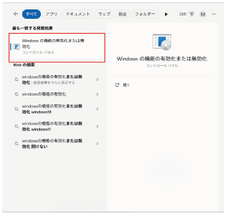
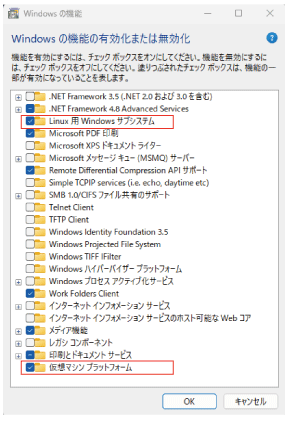
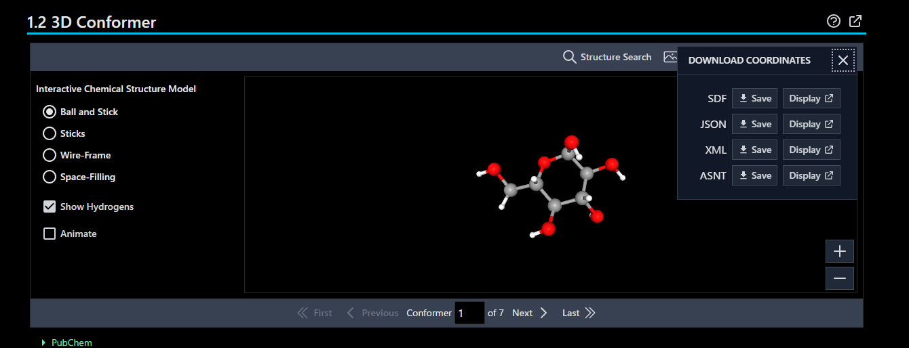

以前にChimeraを使ったAutodock-Vinaによるドッキングをどこかで紹介したような気がしますが， WSLでのAutoDock-Vinaでのドッキングを紹介します。
WSL（Windows Subsystem for Linux）は，Windows上でLinux環境を動作させる仕組みです。Linux環境を使えるようになると研究の幅が大きく広がります。
ググればいくらでも方法は出てきますが（geminiも丁寧に教えてくれるはず），一応以下でインストラクション


チェックが入っていなければ，チェックを入れて，PCを再起動。入っていればそのまま次へ。
（スタート→対象のアイコンを右クリック→管理者権限で立ち上げるを選択）
（“>”は入力しない）
> wsl --set-default-version 2
> wsl --list --online
実行結果
> wsl --list --online
インストールできる有効なディストリビューションの一覧を次に示します。
'wsl.exe --install <Distro>' を使用してインストールします。
NAME FRIENDLY NAME
AlmaLinux-8 AlmaLinux OS 8
AlmaLinux-9 AlmaLinux OS 9
AlmaLinux-Kitten-10 AlmaLinux OS Kitten 10
AlmaLinux-10 AlmaLinux OS 10
Debian Debian GNU/Linux
⋮
Ubuntu-20.04 Ubuntu 20.04 LTS
Ubuntu-22.04 Ubuntu 22.04 LTS
OracleLinux_7_9 Oracle Linux 7.9
OracleLinux_8_10 Oracle Linux 8.10
OracleLinux_9_5 Oracle Linux 9.5
openSUSE-Leap-15.6 openSUSE Leap 15.6
SUSE-Linux-Enterprise-15-SP6 SUSE Linux Enterprise 15 SP6
Ubuntu-24.04をインストールしてみます
> wsl --install -d Ubuntu-24.04 # Ubuntu 24.04 LTSのインストール
インストールが始まります。終わったらインストールしたディストリビューションが起動するので，アカウントとパスワードを設定します
Create a default Unix user account: # 好きな名前を入れてenterを押す
New password: ***** # パスワードを設定します（Windowsのアカウントとは独立しています。以降sudoコマンド実行で必要なので必ずメモするなりして覚えておいてください）
Retype new password: ***** #パスワードを確認されます
パスワードが通るとインストールしたディストリビューションが起動します。
user_account@xxxx: /mnt/c/Users/xxxx$ #user_accountの部分は先に設定したUnix user accountが表示されます。
Linuxの初期設定（.bashrc）に，起動時にディレクトリへ移動するコマンドを追加する
# 以下のコマンドで.bashrcファイルの最終行に"cd ~"を追記。
$ echo "cd ~" >> ~/.bashrc
一旦Linuxからログアウト。（Crtl + d）。powershellもしくはコマンドプロンプトから以下のコマンドで改めてUbuntuを立ち上げる
> wsl -d Ubuntu-24.04 # ディストリビューション（Ubuntu 24.04 LTS）を指定して起動する，というコマンド
Ubuntuがホームディレクトリから起動する（はず）
user_account@xxxx:~$
$ sudo apt update && sudo apt upgrade -y
#パスワードを求められるので，先に設定したパスワードを入力すると，updateとupgradeが始まります。
日本語パッケージのインストール
$ sudo apt install -y language-pack-ja
$ sudo update-locale LANG=ja_JP.UTF-8
基本的なビルドツールのインストール
$ sudo apt install -y build-essential
curl / wgetのインストール（たぶんもう入っているので不要かも）
$ sudo apt install -y curl wget
pythonのパッケージ管理ツール”conda”と必要最小限のパッケージをインストール
$ mkdir -p ~/miniconda3 #ディレクトリーの作成
$ wget https://repo.anaconda.com/miniconda/Miniconda3-latest-Linux-x86_64.sh -O ~/miniconda3/miniconda.sh #インストーラーのDL
$ bash ~/miniconda3/miniconda.sh -b -u -p ~/miniconda3 #サイレントインストール
$ rm ~/miniconda3/miniconda.sh #インストーラーの削除
$ source ~/miniconda3/bin/activate #リフレッシュ
# (base) user_account@xxxx:~$ に変わる
$ conda init --all #condaを初期化
VS Code （ =Microsoftが開発しているソースコードエディタ）の拡張機能を使用してWSL環境と連携させる。いろいろ楽になるので連携させた方がよい。
https://code.visualstudio.com/
にアクセスして，Windowsにインストール。
2.1 日本語化
2.2 Remote Developmentのインストール
VS Codeの左側の拡張機能からRemote Developmentを検索，インストール
Ubuntu側を更新
$ sudo apt update
$ cd ****
$ code . #ドットを忘れない
確認を求められたら「はい」を選択
VS codeの左下にWSL: Ubuntu-24.04などディストリビューション名が表示されていればOK
https://github.com/MO0425/vina-env
に記載の手順でできるはず･･･
(base) user_account@xxxx:~$ mkdir vina # ディレクトリの作成
(base) user_account@xxxx:~$ cd vina # ディレクトリvinaに移動
(base) user_account@xxxx:~/vina$ conda create -n vina python=3.10 # python 3.10の仮想環境にvinaを作製。指示に従う。
(base) user_account@xxxx:~/vina$ conda activate vina # 仮想環境 vinaをアクティブにする
# vina環境下で以下を行う
(vina) user_account@xxxx:~/vina$ conda config --env --add channels conda-forge
(vina) user_account@xxxx:~/vina$ conda install -c bioconda vina
(vina) user_account@xxxx:~/vina$ vina --help # 確認 エラーがでなければOK
(vina) user_account@xxxx:~/vina$ conda install hcc::adfr-suite
(vina) user_account@xxxx:~/vina$ conda install -c conda-forge openbabel scipy rdkit gemmi
(vina) user_account@xxxx:~/vina$ pip install meeko # meekoだけはpipでインストール。condaでインスト－ルするとなぜかpython 2が呼び出される･･･
3D ConformerのDownload CoordinatesからSDFとして保存

例えばPDBjで検索。化合物検索のタブから目的のページへ
右側のダウンロードから，sybyl Mol2 file (*.mol2ファイル)を保存。
https://pubchem.ncbi.nlm.nih.gov//edit3/index.html
で構造式を書いてSMILESを取得（クリップボードにコピー）

※SMILES記法（スマイルスきほう、英語: simplified molecular input line entry system）とは、分子の化学構造をASCII符号の英数字で文字列化した、構造の曖昧性の無い表記方法である。SMILES文字列は多くの種類の分子エディタにおいてインポート可能で、二次元の図表あるいは三次元のモデルとして表示することができる。（Wikipedia）
Avogadro2を使って三次元SDFに変換
https://www.openchemistry.org/projects/avogadro2/

ビルド→挿入→SMILES→クリップボードからペースト
エクステンション→構造最適化
分子のエクスポート→SDFで保存
AIモデル（BoltzやAlphaFold）が出力する生の構造は，あくまで「原子の座標を予測した結果」であり，物理的な原子の反発や結合長を厳密に計算したものではない。
そのため，原子同士がクラッシュしていたり，結合角がおかしな状態になってることがあります。タンパク質のエネルギーを最小化してあげる。
いくつか方法があるけど，ChimeraXのISOLDEプラグインを使うのが楽。
ChimeraXを持っていなければ，https://www.rbvi.ucsf.edu/chimeraxからDLしてインストール
下部のCommand入力窓に，toolshed install isoldeと入力
もしくは，ToolsメニューからMore Tools…を選択→ChimeraX Toolshedが開く
右上の検索窓にISOLDEと入力して検索。開く。
右側のInstalledボタンをクリックしてインストール
Command入力窓に，addhと入力し，水素を付加
isolde startと入力ISOLDEのウインドウが立ち上がる。
AF構造をChoose a modelから選択。
Restraintsタブを選択し，
Reference Modelsから Reference model (self)
LoadPAE matrixボタンを押して，AF予測時に一緒に出力される*_full_data_0.jsonを選択
下側のapplyを押す。アラートが出るけどとりあえずOK。蜘蛛の巣みたいなのが現れる。
アラートはとりあえず全部OK
構造がもにょもにょ動き始める。
動きが安定したところ（よくわからないから適当なところ）で止めて（Stop(keep)），ファイルメニュー→saveからpdbファイルとして保存。ドッキングの受容体タンパクとして使う。
PyMOLなら
align 動かす方のobj, 自分のタンパク質のobj
配列類似性が低い場合のコマンドはsuper
複数ドメインでうまく重ね合わさらない場合のコマンドはcealign
cealign 自分のタンパク質のobj, 動かす方のobj ==（反対になるので注意）==
- FileメニューのExport Molecule…からリガンドを.sdfとして保存する。
- sdfから中心座標とひと回り大きいボックスサイズを出力するpythonスクリプト。
#grid_box.py
# -*- coding: utf-8 -*-
import numpy as np
from rdkit import Chem
#分子の読み込み。ひとつでも複数でもOK。先ほどはき出したsdfのパスを記入
mols = [Chem.SDMolSupplier(f)[0] for f in ['ligand_1.sdf', 'ligand_2']]
#重原子の座標を取得する
def get_coords(mol: Chem.Mol) -> np.ndarray:
mol = Chem.RemoveHs(mol)
conf = mol.GetConformer(0)
if conf is None:
raise RuntimeErrorr ("cannot get conformer from mol")
coords = np.array(conf.GetPositions())
return coords
#分子の重心・分子を包含するgrid boxサイズ
def calc_grid_box_info(mol) -> tuple[np.ndarray, np.ndarray]:
coords = get_coords(mol)
center = np.average(coords, axis=0)
coord_min = np.min(coords, axis=0)
coord_max = np.max(coords, axis=0)
ligand_size = coord_max - coord_min
return center, ligand_size
centers = []
grid_sizes = []
for mol in mols:
c, g = calc_grid_box_info(mol)
centers.append(c)
grid_sizes.append(g)
print(np.average(centers, axis=0))
print(np.max(grid_sizes, axis=0))
実行
(vina) user_account@xxxx:~$ python3 grid_box.py
DiffDock-L，Boltzなどで結合ポーズを予測する。
どこに結合するか分からない状態でシミュレーションすることをブラインドドッキングといいます。DiffDockやDiffDock-Lはブラインドドッキングに極めて長けています。
Boltzはドッキングシミュレーションではありませんが，リガンドも含めて複合体構造を予測してくれます。
しかし，これらは，こんな感じで結合するであろうということをAIが予想するだけなので（ですから，結合エネルギーが計算されません），リガンドがあり得ない結合角をとったり，受容体にめり込んだりしてしまいます。
DiffDock-LやBoltzなどで結合ポーズを予測した後で，Autodock-Vinaを使って，結合を物理的に計算してあげることが重要です。
GNINAは結合ポーズをAI（CNN）で予測しつつ，Vinaで結合エネルギーも計算してくれる優れたソフトウェアですが，ブラインドドッキングではDiffDockにはかないません。
2.1 ChimeraXのToolsメニューからStructure Analysis→Find Cavitiesで探す

ここだとあまりポケットっぽいものがない。強いて挙げるならcavity_3がそれっぽいので，ここの中心を調べる。command窓に
measure center #1.1.3
で，
Center of mass of 220 atoms = (-3.37, 3.46, -7.13)
Center of area of surface cavity 3_cavity SES surface #1.1.3.1 = (-3.69, 3.51, -7.16)
がはき出される。
2.2 PrankWebを使う（https://prankweb.cz/）
保存したAFモデルを使う場合には，Custom structureを選択して，ファイル選択→ファイルを読み込ませる
AlphaFold Structureを選択すれば対象タンパク質のUniProt IDを入力して予測できる。

このように結果が返ってくる。
ポケットの中心や関わっている残基も出される。
（ちなみにCREATE TASKで，Task typeにDocking選んで，リガンド分子をSMILES（Pubchemから取得できる）で入力すれば，ドッキングしてくれます。）

中心座標が分かったらリガンドの大きさにあわせてボックスサイズを決める。単糖なら10 Åくらいの立方体。20 Åくらいまでか･･･
参考 https://autodock-vina.readthedocs.io/en/latest/index.html
~/vina$ mkdir test # 新しくディレクトリをつくる
~/vina$ cd test # ディレクトリに移動する
~/vina/test$ cp /mnt/d/files/Autodock_Vina/Ligand.sdf ./lig.sdf # windows側で作ったタンパク質（pdb）とリガンド（sdf）をコピー。
~/vina/test$ ls -lX
total 420
-rwxr-xr-x 1 mop mop 423081 Mar 6 11:13 rec.pdb
-rwxr-xr-x 1 mop mop 2159 Mar 6 11:14 lig.sdf
~/vina/test$ prepare_receptor -h #ヘルプが出てきたらちゃんとインストールされている
~/vina/test$ prepare_receptor -r rec.pdb -o rec.pdbqt
'B ' apparently composed of not std residues. Deleting
adding gasteiger charges to peptide
~/vina/test$ ls -lX
total 676
-rwxr-xr-x 1 mop mop 423081 Mar 6 11:13 rec.pdb
-rw-r--r-- 1 mop mop 260428 Mar 6 11:30 rec.pdbqt # ←できている
-rwxr-xr-x 1 mop mop 2159 Mar 6 11:14 lig.sdf
~/vina/test$ mk_prepare_ligand.py --help
# 環境構築でmeekoをpipで入れていないとここでエラーが起きる
~/vina/test$ mk_prepare_ligand.py -i 1iep_ligand.sdf -o 1iep_ligand.pdbqt
~/vina/test$ mk_prepare_receptor.py -i rec.pdb -o rec -p -v -g \
--box_size 10 10 10 --box_center 2.96 8.28 -1.60
分子ドッキングのために用いるdifferent map files をつくる
~/vina/test$ autogrid4 -p rec.gpf -l rec.glg
~/vina/test$ vina --ligand lig.pdbqt --maps rec --scoring ad4 --exhaustiveness 32 --out ligand_ad4_out.pdbqt --cpu 8 >Autodock4_forcefield.out
Autodock4_forcefield.outに結果が記録されている
参考：cpuの数を調べる
$ lscpu
Architecture: x86_64
CPU op-mode(s): 32-bit, 64-bit
Address sizes: 39 bits physical, 48 bits virtual
Byte Order: Little Endian
CPU(s): 16 #ここ。 上のオプションで半分くらい（8）にしておく。そこまでcpuを食うわけではない。
....
configureファイル（rec_vina_box.txt）をつくる
touch rec_vina_box.txt
VSCodeでrec_vina_box.txtを開き，中心座標とboxサイズを記入→保存
center_x = 2.96
center_y = 8.28
center_z = -1.60
size_x = 10.0
size_y = 10.0
size_z = 10.0
走らせる
vina --receptor rec.pdbqt --ligand lig.pdbqt --config rec_vina_box.txt --exhaustiveness=32 --out ligand_vina_out.pdbqt --cpu 8 >Vina_forcefield.out
$ mk_export.py ligand_ad4_out.pdbqt -s ligand_ad4_out.sdf
$ mk_export.py ligand_vina_out.pdbqt -s ligand_vina_out.sdf
$ explorer.exe .
でカレントディレクトリからwindowsのエクスプローラが立ち上がります。
こちらはAutodockFFの結果。同様にVinaの結果も見られます。

8個のポーズが出力される。矢印キーでポーズの表示を変えられます。
8個を分割したい場合には，pymolのコマンドラインに
split_states ligand*, prefix=ad4
delete ligand*
と入力すれば，

ad4のprefixをつけて8個のobjとして分割してくれます。
（ちなみに*は，”wildcard”で，任意の文字列。AFDBから取得した構造は，長い名前がついていることが多いので，wildcardを使うと便利）
Autodock4_forcefield.out （シミュレーションの実行のときに，>Autodock4_forcefield.out で指定しています）（テキストエディタなどで開けます。）
AutoDock Vina 7ac2999-mod
#################################################################
# If you used AutoDock Vina in your work, please cite: #
# #
# J. Eberhardt, D. Santos-Martins, A. F. Tillack, and S. Forli #
# AutoDock Vina 1.2.0: New Docking Methods, Expanded Force #
# Field, and Python Bindings, J. Chem. Inf. Model. (2021) #
# DOI 10.1021/acs.jcim.1c00203 #
# #
# O. Trott, A. J. Olson, #
# AutoDock Vina: improving the speed and accuracy of docking #
# with a new scoring function, efficient optimization and #
# multithreading, J. Comp. Chem. (2010) #
# DOI 10.1002/jcc.21334 #
# #
# Please see https://github.com/ccsb-scripps/AutoDock-Vina for #
# more information. #
#################################################################
Scoring function : ad4
Ligand: lig.pdbqt
Exhaustiveness: 32
CPU: 8
Verbosity: 1
Reading AD4.2 maps ... done.
Performing docking (random seed: -663839000) ...
0% 10 20 30 40 50 60 70 80 90 100%
|----|----|----|----|----|----|----|----|----|----|
***************************************************
mode | affinity | dist from best mode
| (kcal/mol) | rmsd l.b.| rmsd u.b.
-----+------------+----------+----------
1 -4.279 0 0
2 -4.149 1.043 3.008
3 -4.077 1.047 4.381
4 -3.994 1.011 3.209
5 -3.934 0.5546 3.156
6 -3.893 0.8702 3.674
7 -3.665 0.6611 3.184
8 -3.642 0.7569 3.795
**
**
rmsd l.b.とrmsd u.b.は**「一番スコアが良かったMode 1」を基準としたズレ**です。
rmsd u.b. (Upper Bound: 上限)
こちらは、「原子の番号（ID）を厳密に1対1で対応させて」ズレを計算した値です。
rmsd l.b. (Lower Bound: 下限) = 見た目の「形」の比較
対称性のある化合物の場合，くるっと分子がまわっていてもu.b.の値が大きくなってしまいます。
l.b. はそれを補正するように「一番近くにある同じ種類の原子」とマッチングさせてズレを計算した値です。
例えば，mode 1とmode 5だと，分子としての結合位置はほとんど変わりません。ですからrsmd l.b.は，小さい値になります。ですが，約60°回転して結合しているので，rsmd u.b.の値は大きくなっています。